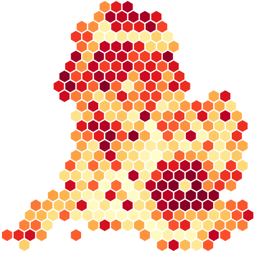

Map (left) and population-weighted Dorling cartogram (right) of county level US 2020 presidential election results
Interactive maps can be a compelling and intuitive way to display geographic variation in your data. But presenting data visually means making choices. The two visualisations above of the 2020 US presidential election results show the difference such choices can make.
The US map, like everything in this document, was generated with open source data and software. The election data can be found here. The maps were generated by the author using the cartogram and leaflet R packages, using methods described in this document. You can find the code in the github repospitory.
Cartograms combine statistical and geographical information in thematic maps, where areas of geographical regions (e.g., countries, states) are scaled in proportion to some statistic (e.g., population, income).1
In long-term care, spending or demographic information is reported at the administrative level. This blog post sets out practical ways to make make maps and cartograms using R and JavaScript, highlighting benefits and drawbacks of competing approaches. The code is included within the post and can also be downloaded from the github repo.
Select the data
I will use the Income Deprivation Affecting Older People Index (IADOPI) as an example dataset. This is an index published by the UK Office of National Statistics which measures the proportion of those aged 60 or over who experience income deprivation.
Each local authority has a score, which is the proportion of people experiencing deprivation. In the most deprived local authority (ranked 1), Tower Hamlets, 43.9% of older adults experience income deprivation. In the least deprived authority (ranked 317), the figure is 5%.
You can click to expand the folded code blocks in this document.
Show the data loading code
# LAD IMD https://www.gov.uk/government/statistics/english-indices-of-deprivation-2019
library(RColorBrewer)
library(dplyr)
library(sf)
download_data <- function(url, out_dir = "./raw_data/") {
out_file <- paste0(out_dir, basename(url))
if (!file.exists(out_file)) {
if (!dir.exists(out_dir)) dir.create(out_dir, recursive = TRUE)
download.file(url, out_file)
} else {
message("File already exists: ", out_file)
}
return(out_file)
}
load_imd <- function(imd_url = "https://assets.publishing.service.gov.uk/government/uploads/system/uploads/attachment_data/file/833995/File_10_-_IoD2019_Local_Authority_District_Summaries__lower-tier__.xlsx") {
# From: https://www.gov.uk/government/statistics/english-indices-of-deprivation-2019
imd <- readxl::read_excel(
download_data(imd_url),
sheet = "IDAOPI"
)
names(imd) <- tolower(gsub("\\W+", "", names(imd)))
imd |>
select(
lacode = localauthoritydistrictcode2019,
laname = localauthoritydistrictname2019,
imdrank = idaopirankofaveragescore,
imdscore = idaopiaveragescore
)
}
# Downloaded from https://geoportal.statistics.gov.uk/datasets/ff261db594dd4ed8841e5ed5092553bc/explore?location=55.216245%2C-3.316331%2C6.44
load_eng_shp <- function(in_file = "./raw_data/lad2019shp.zip") {
shp_file <- grep("\\.shp$", unzip(in_file, list = TRUE)$Name, value = TRUE)
shp_full_path <- paste0(dirname(in_file), "/", shp_file)
if (!file.exists(shp_full_path)) {
message("Unzipping shapefile...")
unzip(in_file, exdir = dirname(in_file))
} else {
message("Shapefile already unzipped")
}
uk <- st_read(shp_full_path, quiet = TRUE)
eng <- uk |>
filter(startsWith(lad19cd, "E")) |>
st_transform(crs = "EPSG:4326")
}
# idaopi 60+ https://assets.publishing.service.gov.uk/government/uploads/system/uploads/attachment_data/file/833947/IoD2019_Research_Report.pdf
load_pop <- function(pop_file = "https://www.ons.gov.uk/file?uri=/peoplepopulationandcommunity/populationandmigration/populationestimates/datasets/populationestimatesforukenglandandwalesscotlandandnorthernireland/mid2019april2019localauthoritydistrictcodes/ukmidyearestimates20192019ladcodes.xls") {
# https://www.ons.gov.uk/peoplepopulationandcommunity/populationandmigration/populationestimates/datasets/lowersuperoutputareamidyearpopulationestimates
pop <- readxl::read_excel(
path = download_data(pop_file),
sheet = "MYE2 - Persons",
skip = 4
) |>
group_by(lad19cd = Code) |>
transmute(
pop_all = sum(c_across(`0`:`90+`)),
pop60 = sum(sum(c_across(`60`:`90+`)))
)
}
get_regions_lookup <- function(regions_lookup_url = "https://www.ons.gov.uk/file?uri=/peoplepopulationandcommunity/populationandmigration/migrationwithintheuk/datasets/userinformationenglandandwaleslocalauthoritytoregionlookup/june20182019laboundaries/lasregionew2019.xlsx") {
# From https://www.ons.gov.uk/peoplepopulationandcommunity/populationandmigration/migrationwithintheuk/datasets/userinformationenglandandwaleslocalauthoritytoregionlookup
regions_lookup <- readxl::read_excel(download_data(regions_lookup_url), skip = 4)
names(regions_lookup) <- tolower(gsub("\\W+", "", names(regions_lookup)))
regions_lookup
}
create_eng_imd_dataset <- function(lads_to_highlight = c(
"Eden" = "#00ff00",
"Barnet" = "#ff01fb",
"Birmingham" = "#00e1ff"
), color_scale = "YlOrRd", scale_steps = 9) {
imd <- load_imd()
pop <- load_pop()
regions_lookup <- get_regions_lookup()
eng <- load_eng_shp()
pal <- colorRampPalette(brewer.pal(scale_steps, color_scale))
eng |>
inner_join(imd, by = c("lad19cd" = "lacode")) |>
inner_join(pop, by = "lad19cd") |>
inner_join(regions_lookup, by = c("lad19cd" = "lacode", "laname" = "laname")) |>
mutate(
color = rev(pal(n()))[imdrank],
label = paste0(
"<b>", laname, "</b><br>",
"Rank: ", imdrank, "<br>",
"Score: ", imdscore, "<br>",
"Older pop: ", paste0(round(pop60 / 1e3), "k")
),
highlight = lad19nm %in% names(lads_to_highlight),
highlight_color = ifelse(highlight, lads_to_highlight[lad19nm], "black")
)
}
# This is the dataset we'll use throughout the document
eng <- create_eng_imd_dataset()Explore the data
Code for the plot in the margin
library(highcharter)
draw_bar_plot <- function(dat, var, chart_type = "chart",
series_type = "column",
series_name,
xlab, ylab,
plot_title) {
plot_df <- dat |>
st_drop_geometry() |>
arrange({{ var }}) |>
rename(var = {{ var }})
highchart(type = chart_type) |>
hc_add_series(
name = series_name,
type = series_type,
data = plot_df,
hcaes(
x = lad19nm,
y = var,
),
showInLegend = FALSE
) |>
hc_xAxis(
title = list(text = xlab),
labels = list(enabled = FALSE)
) |>
hc_yAxis(
title = list(text = ylab)
) |>
hc_title(text = plot_title)
}
draw_bar_plot(eng, imdscore,
xlab = "Local authorities (sorted by proportion experiencing deprivation)",
ylab = "Proportion of older people experiencing deprivation",
plot_title = "Distribution of proportion of adults experiencing deprivation",
series_name = "IADOPI score"
)The bar plot in the margin shows the wide range in the distribution. While a bar plot gives a sense of the overall picture, it is not useful for finding specific areas, or comparing between regions. Let’s make some maps!
Geographic map of deprivation by local authority
We can use the R leaflet package, which is a wrapper around the open source Javascript library of the same name, to make interactive maps. Such maps are visually appealing and easy to understand, and require very little code.
Code
library(leaflet)
# This legend will apply to all maps and cartograms in this post
create_legend_colors <- function(dat, scale_column, n_symbols = 5, color_scale = "YlOrRd", scale_steps = 9) {
pal <- colorRampPalette(brewer.pal(scale_steps, color_scale))
legend_values <- seq(min(dat[[scale_column]]), max(dat[[scale_column]]), length.out = n_symbols)
legend_colors <- rev(pal(length(legend_values)))
legend_labels <- legend_values
legend_labels[1] <- paste(legend_labels[1], "(most)")
legend_labels[n_symbols] <- paste(legend_labels[n_symbols], "(least)")
list(
legend_colors = legend_colors,
legend_labels = legend_labels
)
}
# Function to generate the Leaflet maps in this post
create_map <- function(dat, elementId, second_legend = FALSE, remove_top_left_legend = TRUE,
legend_colors = legend$legend_colors, legend_labels = legend$legend_labels,
legend_title = "Rank", add_tiles = FALSE, zoom = 6.2, base_boundaries = NULL) {
# Create borders for areas we are highlighting
borders <- dat |>
filter(highlight) |>
st_transform("EPSG:4326")
# Base map
leaflet_map <- st_transform(dat, "EPSG:4326") |>
leaflet(
options = leafletOptions(zoomSnap = 0.1, zoomDelta = 0.1),
elementId = elementId
)
# Draw all LA boundaries if provided (e.g. in non-contiguous cartogram)
if (!is.null(base_boundaries)) {
leaflet_map <- leaflet_map |> addPolygons(
data = st_transform(base_boundaries, "EPSG:4326"),
color = "white",
opacity = 1,
fillOpacity = 0,
weight = 0.5
)
}
leaflet_map <- leaflet_map |>
addPolygons(
color = ~ ifelse(highlight, "white", "black"),
opacity = ~ ifelse(highlight, 0, 1),
weight = ~ ifelse(highlight, 3, 1),
fillColor = ~color,
fillOpacity = 1,
label = ~ lapply(label, htmltools::HTML)
) |>
addPolygons(
data = borders,
color = ~highlight_color,
opacity = 1,
fillOpacity = 0,
weight = 3,
label = ~ lapply(label, htmltools::HTML)
) |>
setView(lat = 52.901928, lng = -1.464854, zoom = zoom) |>
addLegend(
position = "topright",
title = legend_title,
colors = legend_colors,
labels = legend_labels,
opacity = 1
)
if (add_tiles) {
leaflet_map <- addTiles(leaflet_map)
}
if (second_legend) {
leaflet_map <- leaflet_map |>
addLegend(
position = "bottomleft",
colors = borders$highlight_color,
labels = borders$lad19nm,
layerId = "laColorLegend"
)
}
# Class name thing to fix leaflet bug
# https://github.com/r-tmap/tmap/issues/575
if (!remove_top_left_legend) {
return(leaflet_map)
}
remove_top_left_js <- '
function (el, x) {
el.getElementsByClassName("leaflet-top leaflet-left")[0].classList.remove("leaflet-top");
}
'
leaflet_map |>
htmlwidgets::onRender(remove_top_left_js)
}
legend <- create_legend_colors(eng, "imdrank")
create_map(eng, "leafletStandardMap", zoom = 6.0, add_tiles = TRUE, second_legend = TRUE)Throughout this document I have highlighted three areas with different sizes and population densities:
EPSG:4326 mean? A note on coordinate reference systems
In the code blocks above, and throughout this document, you will see code like, st_transform(crs = "EPSG:4326"). The st_transform() function can convert geometry from geographic (latitude/longitude) format to projected (easting/northing) and vice-versa. Many packages for creating maps, such as leaflet, expect input data in lat/lon format. However, packages which conduct geospatial operations, such as calculating centroids or creating cartograms, work with shapes on a 2-dimensional plane. Owing to the ellipsoid shape of the world, the most appropriate transformation differs depending on the area. I use the standard ESPG:4326 for lat/lon data, and as this is UK data, the British National Grid ESPG:27700 for projected data. For more information, see Chapter 7 of Geocomputation with R: Second Edition2, Reprojecting Geographical Data.
- Eden: a large, rural area in the North of England with an older population of 18,000.
- Birmingham: a large city with a population of 198,000, the largest older population of any local authority.
- : a relatively large London borough, which is still significantly smaller than most non-London local authorities. It has an older population of 76,000.
Map area bias is the phenomenon where large, sparsely populated rural areas dominate the map, while smaller, more populous cities are less visible.
These areas show some of the benefits and drawbacks of each mapping approach. For example, this map gives the impression that the north of England has significant areas with very low deprivation. Spatially, this is true. However, the region is dominated by large, sparsely populated areas like Eden. The bar plot below shows that excluding London, the North East and North West have the highest levels of deprivation.
Code
library(highcharter)
create_drilldown_data <- function(eng) {
regions_column <- eng |>
st_drop_geometry() |>
group_by(regioncode, regionname) |>
summarise(
imdscore = weighted.mean(imdscore, w = pop60),
pop60 = sum(pop60),
.groups = "drop"
) |>
arrange(imdscore) |>
mutate(
imdrank = rev(row_number()),
imdscorepretty = round(imdscore, 2)
)
regions_drilldown <- eng |>
st_drop_geometry() |>
group_nest(regioncode, regionname) |>
mutate(
id = regionname,
type = "column",
# in the drilldown we'll give the mapping via creating the columns
data = lapply(data, mutate, name = lad19nm, pop60, y = imdscore, imdrank, imdscorepretty = round(imdscore, 2)),
data = lapply(data, \(x) list_parse(
arrange(x, desc(imdrank)) |>
mutate(localrank = rev(row_number()))
))
)
list(
regions_column = regions_column,
regions_drilldown = regions_drilldown
)
}
draw_drilldown_plot <- function(eng) {
drilldown_data <- create_drilldown_data(eng)
tooltip_x <- c("IMD score", "IMD rank (national)", "IMD rank (local)")
tooltip_y <- c("{point.imdscorepretty}", "{point.imdrank}", "{point.localrank}")
hchart(
drilldown_data$regions_column,
"column",
hcaes(x = regionname, y = imdscore, name = regionname, drilldown = regionname),
name = "Region",
colorByPoint = TRUE
) |>
hc_drilldown(
allowPointDrilldown = TRUE,
series = list_parse(drilldown_data$regions_drilldown)
) |>
hc_tooltip(
pointFormat = tooltip_table(tooltip_x, tooltip_y),
useHTML = TRUE,
valueDecimals = 0
) |>
hc_yAxis(
title = list(text = "Proportion of economically deprived older individuals"),
minorTickInterval = "auto"
) |>
hc_xAxis(
title = ""
) |>
hc_title(
text = "Proportion of economically deprived older individuals"
)
}
draw_drilldown_plot(eng)Click a region’s bar to see the distribution within that region
The highlighted authority in the north, Eden, has a population of of 18,000. In fact, much of the North West region is covered by national parks, and there are several large local authorities which have very small populations. Similarly, click the North East region column on the bar plot, and you’ll see there’s only one area that is not red, Northumberland. This area comprises 15% of the older population of the region, but almost 60% of the land. highlights the same issue across London: older people face significant deprivation here. However, only 1.2% of England’s area is covered by London, an area so small that the colour of the polygons is barely visible. Interactive packages like leaflet mitigate this through zoom. However, cartographic approaches can represent data by the variables of interest, such as population, rather than geography.
From maps to cartograms
Hex cartograms
A hex cartogram uses tesellating hexagons to represent geographic areas.3 We can generate hexagons from geographic polygons in R, but in the case of UK local authorities Open Innovations has done the work for us. Their open source UK hex map is published in hexjson format. We can use the very handy R package hexjsonwidget to create the map in the margin with very little code.

Show code to shape the data for a hex cartogram with hexjsonwidget
# Get a json of UK hexes
create_eng_lads <- function(hexjson_url = "https://raw.githubusercontent.com/odileeds/hexmaps/gh-pages/maps/uk-local-authority-districts-2019.hexjson",
hex_cols = c("lad19cd", "color", "rank" = "imdrank", "label", "highlight", "highlight_color")) {
lads <- jsonlite::fromJSON(download_data(hexjson_url))
# Filter hex json data to IDs which start with "E" (England LAs)
eng_hexes_df <- Filter(\(x) startsWith(x$id, "E"), lads[["hexes"]]) |>
lapply(data.frame) |>
bind_rows() |>
# Join with our `eng` dataset
inner_join(
st_drop_geometry(select(eng, all_of(hex_cols))),
by = c("id" = "lad19cd")
) |>
# Create a lad_id for each html node with no spaces or special characters
mutate(lad_id = gsub("\\W+", "_", n))
# Make the data frame into a list
eng_hexes <- highcharter::list_parse(eng_hexes_df) |>
setNames(eng_hexes_df$id)
list(layout = lads[["layout"]], hexes = eng_hexes)
}
eng_lads <- create_eng_lads()# Code to create the map in the margin
hexjsonwidget::hexjsonwidget(
eng_lads, colour = "color", label = NA, elementId = "foldable_hex"
)The hex cartogram needs a legend and a way to identify each area, such as a tooltip. The hexjsonwidget R package is a wrapper for the JavaScript library d3-hexjson, which in turn is built on d3.js, a free, open-source JavaScript library for visualizing data. We can write a little more JavaScript to add what we need. First, we can create a file, tooltip.js, which defines a function to draw a tooltip when we hover over a hexagon.
Show the tooltip javascript
function highlightPolygons(polygons) {
// Highlight the required polygons
polygons.each(function (d) {
d3.select(this).style("stroke", d.highlight_color);
if (d.highlight) {
d3.select(this).style("stroke-width", 3);
d3.select(this.parentElement).raise();
}
});
}
function createToolTip() {
// Find the map element (eng_hex) and polygons
let svg = d3.select("#eng_hex");
let polygons = svg.selectAll("polygon");
// Create a container for the hover text
svg
.append("div")
.style("position", "absolute")
.style("background-color", "black")
.style("border", "solid")
.style("border-width", "1px")
.style("border-radius", "10px")
.style("padding", "10px")
.style("font-family", "Arial, Helvetica, sans-serif")
.style("color", "white")
.style("visibility", "hidden")
.attr("id", "hoverText")
.text("");
highlightPolygons(polygons);
// Show tooltip when mouse is over polygon
polygons.on("mouseover", function (d) {
// Get mouse position for tooltip
let mouseOffset = 15; // pixels
let mousePos = d3.mouse(document.body);
// Put the correct text in the tooltip
d3.select("#hoverText")
.html(d.label)
.style("left", mousePos[0] + mouseOffset + "px")
.style("top", mousePos[1] + mouseOffset + "px");
// Highlight this polygon and make it slightly larger
d3.select(this)
.style("stroke", function (d) {
return d.highlight ? d.highlight_color : "white";
})
.attr("transform", "scale(1.2)");
// Bring to front so highlighted border is visible
d3.select(this.parentElement).raise();
});
// Set each polygon back to normal on mouse out
polygons.on("mouseout", function (d) {
d3.select(this)
.style("stroke", function (d) {
return d.highlight ? d.highlight_color : "black";
})
.attr("transform", "scale(1)");
highlightPolygons(polygons); // bring highlighted to top
});
// Hide tooltip when mouse is not over the map
svg.on("mouseout", function () {
d3.select("#hoverText").style("visibility", "hidden");
});
// Show tooltip when mouse is over the map
svg.on("mouseover", function () {
d3.select("#hoverText").style("visibility", "visible");
});
}As we want to use the same legend colors and values that we have already defined, we can write the function as an R character vector and paste() in the the legend_labels and legend_colors we created in R. We can then use the R htmlwidgets::onStaticRenderComplete() function to tell the browser to read in tooltip.js, and add the tooltip and legend once the hexagons are rendered.
Show the R code to call the tooltip javascript and add a legend
legend_js <- paste0(
'function createLegend(main_svg = "#eng_hex") {
let vals = ["', paste(legend$legend_labels, collapse = "\",\""), '"];
let colors = ["', paste(legend$legend_colors, collapse = "\",\""), '"];
let legend_vals = vals.map((val, i) => {
return {
val: val,
color: colors[i],
};
});
let svg = d3.select(main_svg);
svg
.append("div")
.style("position", "absolute")
.style("background-color", "white")
.style("border", "solid")
.style("border-width", "0px")
.style("border-radius", "10px")
.style("padding", "10px")
.style("font-family", "Arial, Helvetica, sans-serif")
.style("color", "black")
.style("width", "110px")
.style("left", svg.node().getBoundingClientRect().left)
.style("top", svg.node().getBoundingClientRect().top)
.attr("id", "legend")
.append("svg")
.attr("id", "legend_svg")
.style("width", "110px")
.style("height", "200px");
svg
.node()
.insertBefore(d3.select("#legend").node(), svg.node().childNodes[0]);
let legend = d3.select("#legend_svg");
let size = 20;
legend
.selectAll("symbols")
.data(legend_vals)
.enter()
.append("rect")
.style("stroke", "black")
.attr("x", 0)
.attr("y", function (d, i) {
return i * size * 1.25;
})
.attr("width", size)
.attr("height", size)
.style("fill", function (d) {
return d.color;
});
legend
.selectAll("labels")
.data(legend_vals)
.enter()
.append("text")
.attr("x", size * 1.2)
.attr("y", function (d, i) {
return i * size * 1.25 + size * 0.6;
})
.style("fill", function (d) {
return "black";
})
.text(function (d) {
return d.val;
})
.attr("text-anchor", "left")
.style("alignment-baseline", "middle");
// do not draw over map and stop tooltip hover
legend.lower();
}'
)
tooltip_js <- readLines("./tooltip.js")
# Function to call the tooltip and legend functions
draw_elements_js <- "function drawElements() {
createToolTip();
createLegend();
}
drawElements();
"
# This is the actual code that will run on render
on_render_js <- c(legend_js, tooltip_js, draw_elements_js)hexjsonwidget::hexjsonwidget(
eng_lads,
colour = "color", label = NA, width = "400px", elementId = "eng_hex"
) |>
htmlwidgets::prependContent(htmlwidgets::onStaticRenderComplete(on_render_js))It’s much clearer from this map that the north of England and London are the most deprived regions. However, a hex map sacrifices toplogical accuracy.
Topological accuracy refers to how well the topology of the cartogram matches the topology of the original map. Perfect topology preservation is obtained when two regions are neighbors in the cartogram if and only if they are neighbors in the original map.1
Most hexagons have six neighbours, whereas in reality local authorities may have more or fewer. A hex cartogram may give a better sense than a geographic map of the comparisons between regions, but within regions it is harder to identify and compare neighbouring areas.
Another issue is that equal-sized hexagons are used to guarantee tessellation. However, Birmingham, for example, has more than 10 times as many older people than Eden. Is creating hexagons of equal size the most appropriate representation?
Contiguous and non-contiguous cartograms
Indeed, there is significant variation in population between local authorities, as we see in the plot in the margin.
Show population bar plot code
library(highcharter)
draw_bar_plot(eng,
pop60,
xlab = "Local authorities (sorted by population age 60+)",
ylab = "Population",
plot_title = "Distribution of older population by local authority",
series_name = "Older pop"
)One way to address this is to transform the polygons representing each area. We can construct a contiguous area cartogram by a rubber sheet distortion algorithm4 or a non-contiguous cartogram5 using the cartogram R package.
library(cartogram)
# Calculate contiguous cartogram borders (left)
eng_cont <- st_transform(eng, "EPSG:27700") |>
cartogram_cont(weight = "pop60", itermax = 5)
# Calculate non-contiguous cartogram borders (right)
eng_ncont <- st_transform(eng, "EPSG:27700") |>
cartogram_ncont(weight = "pop60", k = 0.8)
# Draw cartograms
create_map(eng_cont, "leafletBlackCont", zoom = 6.1)
# Add the England boundaries to the non-contiguous cartogram
create_map(eng_ncont, "leafletBlackNcont", zoom = 6.1, base_boundaries = eng)In both maps, the polygons are transformed, but the centroid of each new polygon is fixed to the centroids of the respective local authority. The contiguous area cartogram, on the left, is more aesthetically pleasing. However, because the size of each polygon is distorted proportional to its population, this leads to overlap in areas like London, where many local authorities with large population border one another. overlaps its neighbour, as do most London local authorities. Furthermore, to maintain the contiguous appearance, small areas surrounded by other small areas, like Eden, can end up stretched larger than their population warrants. In order to achieve a more aesthetically pleasing map, we trade-off some statistical accuracy.
Statistical accuracy refers to how well the modified areas represent the corresponding statistic shown1 (in our case, population).
Conversely, the non-contiguous map does not have any overlaps between areas, and each area maintains its centroid and shape, and the size reflects the population size. However, there are large gaps between areas, making it less aesthetically pleasing, and harder to get a sense of the overall pattern, particularly in sparsely populated areas.
Facet maps
Another approach to handling regions of different sizes is to use facets. The R tmap library supports this. An advantage of this is that geographically small areas like London are much more prominent. Furthermore, it is much clearer that the North East, for example, has one local authority which comprises over half of its land area.
Code
library(tmap)
create_facet_map <- function(eng) {
facet_order <- c(
"North East", "Yorkshire and The Humber", "North West",
"West Midlands", "East Midlands", "East",
"South West", "London", "South East"
)
# Set facet order and labels
eng <- eng |>
mutate(
tmap_label = paste0(lad19nm, " (rank: ", imdrank, ", score: ", imdscore, ")"),
region_fct = factor(regionname, levels = facet_order)
)
tmap_mode("view")
# Hack to circumvent tmap not supporting polygon border
# of different colors: cast to lines and draw those
eng_lines <- eng |>
st_cast("MULTILINESTRING") |>
arrange(highlight)
tm_shape(eng) +
tm_polygons(
col = "imdrank",
id = "tmap_label",
style = "cont",
legend.show = FALSE,
palette = "-YlOrRd"
) +
tm_facets(by = "region_fct") +
tm_basemap(NULL) +
tm_shape(eng_lines) +
tm_lines(col = "highlight_color", lwd = 1.5) +
tm_facets(by = "region_fct")
}
create_facet_map(eng)This method, too, sacrifices topological accuracy. Neighbouring authorities are in different facets, and not drawn on the same scale. This highlights the importance of asking: who is the map for? If it is for a national policymaker, or sub-national body divided across regional boundaries, it may be useful to compare regions. Conversely, local decision makers may wish to compare themselves to their neighbours, in which case a map like this may not be appropriate.
Using facets does not exclude the other methods. I have drawn the regional map here using geographic administrative boundaries, but the same approach could be used with the contiguous or non-contiguous polygons.
Are 3d maps the answer?
We are trying to plot three dimensions: shape, intensity of deprivation and population. It is worth considering a three-dimensional map. We can create these using echarts4r, an R wrapper around Apache ECharts, an open source JavaScript visualisation library.
Click and drag the map to pan and zoom
Code
library(echarts4r)
# Create basic label (doesn't support html labels)
eng <- eng |>
mutate(
echarts_label = paste0(lad19nm, " \nRank: ", imdrank, "\nScore: ", imdscore, "\nOlder pop: ", round(pop60 / 1e3), "k")
)
# Get the boundaries into the expected format by writing them
# to a geojson string and then reading that string into a list
eng_geojson <- eng |>
# make `name` the label so it is displayed by default
select(lad19cd, name = echarts_label) |>
geojsonsf::sf_geojson() |>
jsonlite::parse_json()
eng_3d <- eng |>
mutate(
scaled_pop60 = scales::rescale(pop60, to = c(1, 25)),
show = TRUE
) |>
e_charts(echarts_label) |>
e_map_register("UK", eng_geojson) |>
e_geo_3d(scaled_pop60, color,
type = "UK",
label = list(
fontSize = 25
),
viewControl = list(
maxAlpha = 180,
alpha = 90,
distance = 130 # zoom out a bit
)
)
eng_3dThis is appealing, but the drawback is that the visibility of an area is a function of the areas surrounding it. This is particularly noticeable in London, which where it is difficult to judge the height of neighbouring authorities. This is partly caused by map area bias we see in geographic maps, as the 2-dimensional representation is based on the geographic shape. A 3d map is not limited to using geographic shapes. However, if you have a cartogram which creates shapes based on population, do you need a third dimesion?
This utility of these maps depend on who the information is for. Decision makers in small, individual areas might prefer a map where it is easier to compare themselves to their neighbours. National policymakers might find the overall picture useful. However, there may be methods which can achieve both.
Dorling cartograms
A final option is to use Dorling cartograms, like the US election cartogram at the start of this document.
Code
eng_dorling <- st_transform(eng, "EPSG:27700") |>
cartogram_dorling(
weight = "pop60",
m_weight = 0.4, # Circle movement weights. 0 prevents any pair-repulsion.
k = 0.6 # share of the bounding box of x filled by the larger circle
)
create_map(eng_dorling, "leafletBlackDorling", second_legend = TRUE)With this approach, it is apparent that the north of England is relatively deprived, with geographically large, sparsely-populated areas like Eden appropriately small. This is appealing. Birmingham is now the largest area, which it should be, as it has the greatest population. The situation in in London is visible. However, we sacrifice geographical accuracy.
Geographical accuracy refers to how much the modified shapes and locations of each area resembles its geographical borders.1
As the circles can grow or shrink, the centroid of each polygon has to drift slightly to prevent overlapping. This requires some judgement. I have set the k parameter (share of the bounding box filled by the larger circle) to 0.6. If set too low, there’s very little difference in size between areas with different populations. If set too high, area circles become very large, and must repel away from their original position, resulting in a map which bears no relation at all to geography. This can be avoided by setting the m_weight parameter to zero, but that will create a incomprehensible map of overlapping circles. At the current settings, the shape of England is approximately maintained, though it may be difficult to locate a specific area.
Which map is best?
- Ouchi, J. & Hattori, K. Estimated number of short-stay service recipients in hokkaido prefecture, japan, from 2020 to 2045: Estimation by machine learning and review of changing trend by cartogram. (2020).6 This paper uses machine learning to predict future long-term nursing care demand in Japan’s prefectures. These are visualised using contiguous area-cartograms.
- Forder, J. & Allan, S. The impact of competition on quality and prices in the english care homes market.7 This paper uses chloropleth maps to visualise market concentration of care home supply in England.
- Yalcin, M. Mapping the global spatio-temporal dynamics of COVID-19 outbreak using cartograms during the first 150 days of the pandemic.8. This paper uses density-adjusted cartograms to visualise the spread of Covid-19 cases.
- Inns, T. et al. Estimating the burden of care home gastroenteritis outbreaks in England, 2014–2016.9. This paper uses hex cartograms to visualise the rates of acute gastroenteritis in long-term care facilities.
- Gao, P., Zhang, H., Wu, Z. & Wang, J. Visualising the expansion and spread of coronavirus disease 2019 by cartograms10. This paper uses Dorling cartograms to examine the spread of Covid-19.
The answer depends on the policy goal, but some maps are generally received better than others. Non-contiguous cartograms are the only type which are perfectly statistically, topologically and geographically accurate. However, they are also rated as the most boring type of map.11 There is no point presenting the results of your research if no one is interested. Users of maps prefer contiguous and Dorling cartograms across several domains (though this analysis was of static rather than interactive maps).11 Inspired by some of the domains in this research, I propose the following decision-making tool for long-term care policy focused maps and cartograms.
flowchart TD
Q[Which level are policy decisions made?]
Nat["Macro area (e.g. national)"]
Loc["Individual area (e.g. local)"]
Geographic(Geographic map)
Import([What is important])
SimilarPop([Areas have similar size \n populations?])
Dorling[Dorling]
Hex[Hex cartogram]
Cont[Contiguous cartogram]
Noncont[Noncontiguous cartogram]
Aes[Are aesthetics important?]
Facets[Facets]
Meaningful([Meaningful comparison between \n groups of areas?])
MeaningfulNeighbours([Important to compare geographic \n neighbours?])
Q --> Nat
Q --> Loc
Nat --> SimilarPop
Loc --> MeaningfulNeighbours
MeaningfulNeighbours -->|Yes| Geographic
MeaningfulNeighbours -->|No| Import
%%Loc -->|Adjacency important| Aes
%%Loc -->|Statistical accuracy important| Dorling
%%Loc -->|Create equal sized neighbours| Hex
SimilarPop -->|Yes| Import
SimilarPop -->|No| Meaningful
%%Meaningful -->|No| MeaningfulNeighbours
%%MeaningfulNeighbours -->|No| Dorling
%%MeaningfulNeighbours -->|Yes| Noncont
Meaningful -->|No| Import
Meaningful -->|Yes| Facets
Import -->|Adjacency| Aes
Import -->|Overall picture| Dorling
Import -->|Comparison across areas| Hex
Aes -->|Yes| Cont
Aes -->|No| Noncont
Import -->|Statistical accuracy| Noncont
This flowchart is a complicated way of saying, “it depends”. For policymakers at the level of geographic boundaries of the data, the ability to immediately identify that area is crucial. Conversely, for regional or national policy questions, perhaps the most important area to highlight is the overall picture. Ultimately, as ever with communicating the results of research, the question is who is your audience?
Finally, this blog post is not exhaustive. There are other approaches to transforming a map while preserving topology (see e.g. Bouts et al., 201512). There are other methods for presenting data, such as mosaic and table cartograms (see e.g. Nusrat et al., 20161). Additionally, we have focused here on continuous data. Categorical opens the door to different maps altogether such as dot density maps. This is the first post in the GoLTC Data Science Network, so if you are interested any of these topics, or others, please let us know.
A note on reproducibility
To run this code yourself, you can copy and paste the individual code chunks. Alternatively, to see all the code, including for the US maps created at the beginning of the, please visit the github repo.